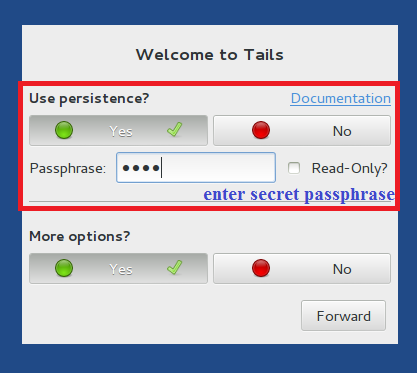
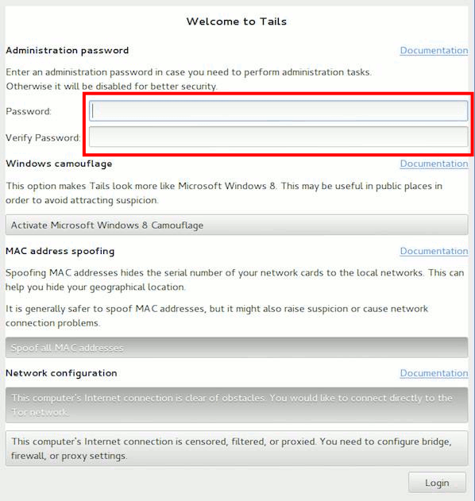

Tor, безусловно, одно из самых нужных средств защиты личных данных. Но чтобы обезопасить себя со всех сторон и работать, не оставляя вообще никаких следов, нужно намного больше. Tails — операционная система семейства Debian Linux, основанная на серьезных принципах защиты данных. Используя флешку с Tails, ты можешь не опасаться не только слежки в интернете, но и обыска в квартире.
Вступление
Tails — не единственный дистрибутив Linux, который ставит защиту данных во главу угла. Но, на мой взгляд, это на сегодняшний день лучший выбор для человека, желающего сохранить конфиденциальность переписки, защищенность личных данных и сохранность важной информации от любопытных глаз. И раз уж я заговорил о принципах защиты данных в Tails, то нелишне будет их перечислить.
Все эти принципы дополняют друг друга. Если ты действительно озабочен защитой своих данных и сохранением конфиденциальности, не пренебрегай ни одним из них.
Установка
Для установки Tails нам понадобится две флешки. Почему две? Чтобы понять, что такое рекурсия, нужно сначала понять, что такое рекурсия. А Tails можно установить, только используя Tails. Скачиваем ISO с официального сайта tails.boum.org. Образ рекомендуется сразу проверить с помощью OpenPGP, подробная инструкция о том, как это сделать, есть на сайте. Скачанный образ записываем на первую, промежуточную флешку с помощью Universal Usb Installer. После этого можно выключать компьютер и загружаться с флешки. Когда ОС загрузится, нужно будет вставить вторую (основную) флешку и выбрать Applications → Tails → Tails Installer Install by Cloning.
Если все получилось, то система готова к работе.
Начало работы
После загрузки с рабочей флешки нам потребуется создать постоянный (persistent) защищенный раздел, своеобразный «жесткий диск на флешке». Это делается через Application → Tails → Configure Persistence.
Перезагружаем компьютер и на загрузочном экране выбираем Use Persistence и More Options, после чего вводим пароль для нашего хранилища.
Из меню внизу экрана выбираем регион. Это важно, поскольку от региона зависят входные узлы Tor. Здесь следует поэкспериментировать. В моем случае лучшим выбором оказалась Дания.
В меню расширенных настроек задаем пароль для программ, которым нужны права администратора. Можешь поставить любой, он работает в рамках сессии и ни на что больше не влияет.
Имей в виду, что загрузка занимает некоторое время, а потом Tails еще несколько минут будет подключаться к Tor. Отслеживать процесс можно, щелкнув по иконке Onion Circuits — луковичке в верхнем правом углу экрана.
Спустя некоторое время Tails проинформирует об успешном подключении к Tor. По умолчанию сеть сконфигурирована так, что весь трафик будет проходить через него. Теперь можно скачать все, что нам нужно для работы.
Дополнительное ПО, сохранение файлов и настроек
По умолчанию Tails не рассчитана на сохранение установленного ПО, настроек и файлов после выключения компьютера. Однако создатели предусмотрели возможность хранить некоторые данные в персистентном разделе. Настроить, что именно будет храниться, можно в разделе Settings → Persistent.
Большинство пунктов меню очевидны, поэтому я остановлюсь на последних трех. Второй и третий с конца отвечают за хранение APT-пакетов. Tails основана на Debian, поэтому большинство нужного нам ПО можно установить при помощи apt-get. И хотя сами программы при отключении компьютера не сохранятся, пакеты APT при соответствующих настройках останутся в персистентном разделе. Это позволяет развертывать все нужное ПО в процессе загрузки системы.
Последний пункт меню Dotfiles позволяет создать в персистентном разделе папку с файлами, ссылки на которые будут создаваться в домашней папке Tails при загрузке. Выглядит это следующим образом.
Вот пример структуры файлов в постоянном разделе.
/live/persistence/TailsData_unlocked/dotfiles
├── file_a
├── folder
│ ├── file_b
│ └── subfolder
│ └── file_c
└── emptyfolder
В домашней папке при таком раскладе будет следующая структура ссылок:
/home/amnesia
├── file_a → /live/persistence/TailsData_unlocked/dotfiles/file_a
└── folder
├── file_b → /live/persistence/TailsData_unlocked/dotfiles/folder/file_b
└── subfolder
└── file_c → /live/persistence/TailsData_unlocked/dotfiles/folder/subfolder/file_c
Защищаем данные, отбрасываем хвост
Сам по себе наш персистентный раздел уже зашифрован. Однако у него есть существенный недостаток: он не обеспечивает правдоподобное отрицание наличия зашифрованных данных. Чтобы обеспечить правдоподобное отрицание, я предложу решение, которое отличается от рекомендаций создателей Tails. Как поступить тебе — решай сам.
Создатели Tails рекомендуют использовать cryptsetup, основанный на LUKS. Эта программа позволяет создавать скрытые разделы, однако такой раздел скрыт не до конца. Насколько мне известно, существует возможность обнаружить заголовок скрытого раздела, что позволяет установить его наличие.
Такой скрытый раздел лично меня не устраивает. Поэтому я решил использовать старый добрый TrueCrypt версии 7.1а. Заголовок скрытого раздела TrueCrypt неотличим от случайных данных, и, насколько мне известно, обнаружить его невозможно. Двоичный файл программы TrueCrypt лучше хранить здесь же, в персистентном разделе.
Детально описывать процесс создания двойного криптоконтейнера я не стану, отмечу лишь важный нюанс. Поскольку скрытый раздел TrueCrypt по-настоящему скрытый, о его существовании не догадывается даже сама программа, пока ты не введешь нужный пароль. Из-за этого при записи файлов в ложный раздел скрытый раздел может быть поврежден. Чтобы этого не произошло, при монтировании ложного раздела для записи на него картинок котиков нужно выбрать Mount Options → Protect hidden volume when mounting outer volume.
Подобно ящерице, которая при опасности отбрасывает свой хвост, мы теперь в случае необходимости сможем ввести пароль от фальшивого раздела и продемонстрировать всем фотографии котиков вместо конфиденциальной информации.
Общение
Теперь, когда мы обезопасили нашу информацию, можно приступить к ее передаче, то есть к общению. Начнем с Pidgin. Он отлично годится в качестве клиента IRC, а в Tails его еще и немного усилили. В состав ОС включен Pidgin с установленным плагином для протокола OTR. Именно он нам интересен больше всего. Избегая сложной математики, можно сказать, что этот протокол обеспечивает защищенную передачу данных с возможностью отречения, то есть доказать, что конкретное сообщение написано конкретным человеком, невозможно.
Прежде чем начать общаться с кем-то по протоколу OTR, нужно подключиться к серверу IRC. При этом очень важно удостовериться в использовании SSL. Tor шифрует трафик при передаче его между узлами, но, если ты не будешь использовать SSL, твой трафик будет передаваться в открытом виде до входного узла Tor и от выходного узла адресату. Некоторые узлы Tor забанены на серверах IRC, поэтому может потребоваться перезапуск Tor. Сделать это можно командой /etc/init.d/tor restart.
После того как соединение с сервером установлено, выбираем Buddies → New Instant Message.
В открывшемся окне диалога выбираем Not Private → Start Private Conversation.
Будет предложено три варианта для аутентификации: ввести ответ на секретный вопрос, который вы обсудили с собеседником заранее (в этом случае необходимо ввести один и тот же ответ, пробелы и регистр считаются); ввести общую «секретную» фразу; проверить fingerprint — это сорокасимвольная последовательность, идентифицирующая пользователя OTR.
Теперь можно переписываться по OTR. Но как насчет голосового общения? Тут, увы, не все гладко. Поскольку Tails направляет весь трафик через Tor, возникает ряд проблем для голосового общения. Во-первых, большинство VoIP-программ используют UDP, в то время как через Tor возможна передача только пакетов TCP. Во-вторых, Tor не отличается скоростью и пакеты иногда приходят с сильной задержкой. Так что возможны задержки и разрывы связи.
Тем не менее существует OnionPhone, специальный плагин для TorChat. Неплохо справляется и Mumble, хотя этот вариант и менее безопасен. Чтобы Mumble работал через Tor, необходимо запускать его командой torify mumble, а также выбрать пункт Force TCP в сетевых настройках программы.
Электронная почта
Почту в Tails можно использовать точно так же, как и в других ОС. В стандартную сборку входит почтовый клиент Icedove, его настройки и ключи можно хранить в персистентном разделе. Важный нюанс, который следует иметь в виду при отправке писем, состоит в том, что заголовки (subject) не шифруются. Это не ошибка, а особенность реализации протокола, о которой нужно просто знать. Кроме того, файлы, передаваемые по электронной почте, рекомендуется шифровать.
Итого
Я описал лишь некоторые возможности Tails, но базовая сборка содержит внушительный набор дополнительных программ, которые тебе предстоит изучить самостоятельно. Рекомендую, к примеру, посмотреть софт для стирания метаданных файлов — он поможет тебе обезопасить себя еще лучше.